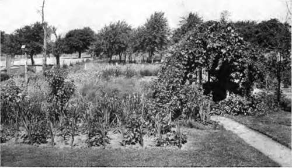

Chapter XVII. Flowers For Cutting
Description
This section is from the book "Flower Gardening", by H. S. Adams. Also available from Amazon: Flower gardening.
Chapter XVII. Flowers For Cutting
It is a pretty poor home garden in which no flowers are picked. What are they there for—mere show? Such gardens exist, but happily they are in the minority.
There is never any need of robbing perceptibly the garden of its treasures, no matter how small it is. If the cutting is done with judgment here and there, and stems are taken full length, it is seldom that the reduction of bloom is apparent; a moderate-sized garden will often stand the loss of a market basket or two of its floral glory. Judgment will not err if it has back of it the knowledge that quantity in the case of flowers cut for the house is very unimportant; three stalks of lilies in a vase will be seen in all their beauty of form whereas fifty jammed into a jar together are an unnatural massing.
On large estates there are special cutting gardens. This is a wholly admirable idea for even the smallest place. It not only relieves the garden proper from too much strain, but where a great many cut flowers are desired for the house the tract can be at the same time a reserve garden or nursery. The modern tendency, and it is a good one, is to keep down numerically the variety of material employed in garden pictures. For much, or all, of what is rejected as picture material, though too fondly liked to discard altogether, the reserve garden is a convenience amounting to a necessity.
It is just as well to isolate this garden, though there is no occasion to do so if ordinary pains are taken to keep it in good condition; there are cutting gardens that are really beautiful, even where the beds are as simple as if the planting were lettuce and there is little that is not in straight rows.
Planting in straight rows is best for the simple reason that it lightens labor. No planning is necessary for the planting and if sufficient space is left between the rows most of the weeding and cultivation can be done with a hoe. The work of fertilizing and winter protection is also reduced to a minimum.
Grow a few shrubs in the cutting garden if there is room; some of them are readily propagated by cuttings. Shrubs elsewhere on the grounds may, of course, supply enough cut flowers without injury. But these should not be drawn on too heavily; several, like rhododendrons and azaleas, not at all. In the cutting garden plant forsythia, for branches to force in the house in February; the pink-flowering almond, or any good deutzia, weigela, viburnum, spirea, hypericum or lilac. These may be growing nursery stock or employed for an informal hedge to screen the planted space from view.
Plant hybrid perpetual and hybrid tea roses just as if they were so many cauliflowers or eggplants. Use a large number of one kind in preference to a few of many kinds, so that no mixing wil be necessary when cut in quantity for the house. The white Frau Karl Druschki is among the best hybrid perpetuáis for cutting with long stems, particularly when partially opened. A dozen plants of this, or Mabel Morrison, or Baroness de Rothschild or General Jacqueminot, is better than three of each. La France is a fine hybrid tea for the purpose; so are Killarney, Griiss an Teplitz and Kaiserin Au-guste Victoria. Such old teas as Isabella Sprunt and Safrano, the very fragrant noisette, Celine Forestier. and the moss rose. Blanche Moreau are further selections from a wide range; give the teas extra winter protection. Where quick results are desired, buy two-year-old plants—unless they are novelties, thirty-five cents is a fair price.
There are no better perennials for cutting than the German, Siberian and Japanese irises, brief as the life of the blossoms is. The selfs are by far the best—the purple, pale, blue, straw-colored and pearl German, the blue Siberian and the kindred white I. orientalis and the purple and clear white Japanese. The two Japanese kinds go well together in vases and blue cornflower is a good accompaniment for the straw-colored German.
"On large estates there are special cutting gardens. This is a wholly admirable idea for even the smallest place".
Plant not only the light and dark blue tall larkspur but the lower and much more graceful Delphinium chinensis. The latter has both of the blue shades and white as well. It is highly desirable for cutting, but unfortunately does not last long in the house. Phlox of the tall late kinds has the same fault of soon beginning to shed petals on the table or floor. Of the P. suffruticosa type choose Miss Lingard and of the later P. decussata any of the well-defined shades—Mrs. Jenkins, Sie bold and Madame Paul Dutrie are all good varieties.
The old double clove-scented grass pinks and the newer Marguarite carnations; the double Lychnis viscaria, the salmon and mulberry shades of oriental poppy. Pentstemon barbatus Torreyi, white or clearly defined colored herbaceous peonies Funkia sub cor data, feverfew, Aconitum autumnale sea holly, Anemone japonic a, all the hardy asters, boltonia, fraxinella (dictamnus), doronicum, Coreopsis lanceolata, Centaurea montana, pompon chrysanthemums, pyrethrum, Bap ti si a australis, Campanula persicifolia, Campanula trachelium, antheri-cum, anthemis, amsonia, trollius,, helenium, Valeriana officinalis, Statice latifolia, Gypsophila pan-iculata, bleeding heart, Scab io sa caucasica, Ranun* cuius aconitifolius fi. pi., Primula veris superba, Primula cortusoides Sieboldii, the California violet, Phlox divaricata, Monarda didyma, Lychnis Haageana, lupine and Helleborus niger are among the other perennials that are desirable.
The Canterbury bell, iceland poppy, sweet-william, columbine and the gloxinoides type of pent-stemon are the best of the biennials, or plants treated as such. The foxglove is less satisfactory only because the bells fall quickly.
Among the annuals and plants so classed the pansies, ordinary and tufted, are very choice cut flowers if grown by varieties and in sufficient quantity to permit the removal of branches; pansy blossoms with only their own little stems are not themselves in vases. China asters, both double and single; scabiosa, nasturtium, sweet peas, nigella, Shirley poppies, clarkia, sweet alyssum, African marigold, larkspur, Arcotis grandis, cornflower, chrysanthemum, nemesia, Drummond's phlox, schizanthus, mignonette, candytuft, cosmos, sweet sultan, coreopsis and salpiglossis are all equally desirable in their way. Grow the nasturtium on poor soil. For early risers the Japanese, Heavenly Blue and other morning glories may be added; besides they are especially beautiful on the breakfast table.
Of the hardy bulbs, plant only the lilies whose odor is not too strong for the house. The best of easy culture are L. candidum, L. speciosum, L. longtflorum, L. tignnum and L. croceum. Any of the May-flowering tulips, single hyacinths, all kinds of narcissus, Fritillaria meleagris, Scilia nutans, the giant snowdrop, Allium Moly, quamash, Spanish iris, English iris and the Trebizond starch hyacinth, Heavenly Blue, are other selections of the highest merit, both for culture and beautiful bloom.
The dahlia and gladiolus are nowhere so valuable as in the cutting garden. Choose free-flowering dahlia selfs, with the habit of long stems, and plant the gladioli at fortnight intervals to secure a longer season of bloom. Both the montbretias and the ixias are superior cut flowers and neither is expensive excepting for the newest kinds. The single tuberose is very good indeed for cutting, though rarely used. Tigridias are showy, but perishable.
Although variety is better relegated to the cutting garden, the advantage of keeping it well reduced in the case of plants grown primarily for cut flowers cannot be too strongly emphasized. Favorite flowers first and then the favorite variety or varieties of these should be the rule. Buy bulbs and seed by name, to avoid mixture in a row: sometimes the solid effect in the cutting gives you just the idea you want for the house or the hardy garden.
Some of the herbs, notably the common sage, wormwood and burnet, furnish beautiful foliage for cutting—the first two in silvery sprays. The southernwood (Artemisia abronatum), Roman wormwood (Artemisia pontica) and lavender cotton (Santolina Chamaecyparissus) are similarly useful. One plant of the lemon verbena and another of rose geranium there ought always to be.
With a coldframe a much longer season of California violets is possible. This is also the best way to grow the beautiful Anemone St. Brigid in the North for cutting—as well as other perilously tender bulbs and perennials.
The planting of the cutting garden, of course, should be so arranged as to give it the longest possible season. April to October, inclusive, is not a difficult range for bloom, and during the remainder of the year evergreen foliage and berries are easily available. The common black alder, or winterberry (Ilex verticillata) has excellent red berries for cutting.
Continue to:
- prev: Chapter XVI. The Making Of Flower Pictures
- Table of Contents
- next: Chapter XVIII. The Most Dependable Flowers